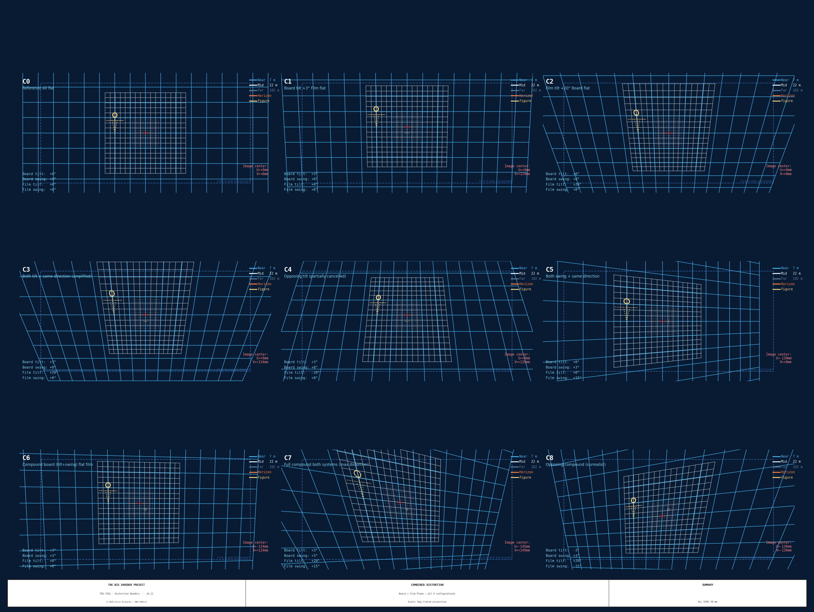

Funding Proposal Outline¶
The Big Shoebox: A Deployable Room-Scale Camera¶
Proposal outline for arts non-profits, MFA/BFA thesis boards, and artist residency programs. Target funders: NEA, Puffin Foundation, Aperture Foundation, CERF+, Headlands Center for the Arts, Skowhegan School of Painting and Sculpture, university equipment grants.
1. The Hook¶
A standard shipping container sits in a field. Inside, on 116 square feet of cotton fabric, a cyanotype image is forming. The image will be approximately 15 feet wide and 8 feet tall. The people who made it will wade into the image to develop it.
The container is a camera.
Not a reference to a camera. Not a metaphor. A working, optically precise, transportable pinhole camera. The largest operative example documented. Built to produce full-contact-scale cyanotype photographs of whatever landscape, cityscape, or architectural space it is placed in front of.
The Big Shoebox Project is the design, fabrication, and operation of that camera.
2. Project Overview¶
What¶
TBS-001 is a 20-foot ISO shipping container converted into a functional large-format pinhole camera. The pinhole (2.17mm, precision laser-drilled, stainless steel) sits at one side of the container. The image plane — a stretched cotton muslin surface spanning the active 4,499 × 2,388mm film zone — sits at the other. Every exposure produces a latent cyanotype image on approximately 116 square feet of fabric, developed in plain water.

How¶
The optical specification follows the Lord Rayleigh formula for optimal pinhole diameter (d = 1.9√(fλ), λ = 550 nm), yielding an f-number of f/1088 and a baseline exposure of approximately 30–45 minutes in direct sunlight using the Mike Ware New Cyanotype formula on cotton muslin. Every design decision — aperture, image plane materials, exposure calculation, process chemistry — traces to a peer-reviewed source or manufacturer datasheet. The full technical documentation is publicly available at alvinr.github.io/tbs.
The camera is transportable by commercial hire truck (no CDL required) and operates off-grid via a self-contained water system that supports ~10 full-size prints between resupply runs.
Why Now¶
The history of large-format photography is a history of increasing precision in decreasing size. The view camera shrank from room to studio to field. The Big Shoebox inverts that trajectory: it scales a camera back up to architectural dimensions, not as spectacle, but as instrument. The container is not incidental to the work — it is the camera body. The constraint of the container's interior geometry is the optical specification. Site, transport, and access become compositional decisions.
3. Technical Innovation¶
The project incorporates two independent movement systems — equivalent to the front and rear standards of a view camera — operating at pinhole focal lengths. No camera of this type is known to exist.
Front Board: Tilt and Swing (±5.3°)¶
A spherical-pivot adapter plate mounts in the same wall-frame interface as the vanilla pinhole plate. A GE50-DO-2RS spherical plain bearing (PTFE-lined, maintenance-free) allows the pinhole to pivot ±5° in both tilt and swing. Four M8×1.0 fine-pitch adjustment screws with 36-detent knurled knobs provide 0.012° per click resolution.
Effect: every 5° of board tilt steers the projected image 207mm across the film plane (2,362 × tan 5°). Used for compositional placement — shifting what part of the scene falls where on the print without moving the camera.
Film Plane: 4-Corner Independent Actuation (±42° tilt, ±28.3° swing)¶
Four independently-driven corners allow the image plane to be tilted, swung, twisted, or warped into any compound configuration. Each corner is driven by a 3/4"-6 Acme leadscrew via an 8" handwheel; rod-end spherical bearings (GIR25-DO) connect the leadscrews to the image plane frame.
Effect: Scheimpflug-equivalent movements at pinhole focal lengths — not to adjust focus (pinholes have infinite depth of field) but to control perspective, convergence, and geometric projection.
Combined Operation¶
The two systems interact non-linearly. When both are engaged simultaneously, the resulting optical projection cannot be predicted by either system alone and cannot be produced by any other camera type. A front board tilt combined with an opposing film plane tilt partially cancels the image shift while introducing a subtle S-curve geometric distortion. Full compound operation — both axes of both systems simultaneously — produces images where no lines remain parallel in any axis.

These interactions are modeled and documented in the combined distortion renders, produced from a two-step ray-tracing projection model derived from first principles.
Design Rigor¶
All specifications are citable. Optical derivations reference Rayleigh (1891), Smith's Modern Optical Engineering, and the Schwarzschild reciprocity failure model. Mechanical specifications reference SKF bearing datasheets, McMaster-Carr part numbers, and manufacturer tolerance standards. The full documentation — 12 technical reports, 3-sheet engineering drawings per mechanism, Python source for all optical simulations — is open and free to reuse.
4. Artistic Vision¶
The pinhole camera's defining property is infinite depth of field: near and far are equally sharp. Every element of a scene — a blade of grass at three feet, a mountain at thirty miles — records at the same clarity. This is not a limitation to work around. It is the medium's fundamental statement about attention: everything matters equally.
The movement systems add a second layer. The front board and film plane allow the photographer to place the image precisely on the print surface, to compress or expand perspective, to make the geometry of the scene converge or diverge. But unlike a view camera's Scheimpflug movements, which are used to adjust focus, these movements have no focus to adjust. They are purely compositional.
The result: a camera with infinite depth of field and view-camera-level geometric control, operating at a scale where the print becomes an environment. Viewers do not stand in front of the image. They enter it. A 13-foot cyanotype print on fabric can be stretched across a gallery wall, suspended from a ceiling, or laid on the ground. The scale changes the relationship between image and body.
The cyanotype process connects the work to the deepest history of photography. Anna Atkins made the first photographic book in 1843 using the same chemistry: ferric ammonium citrate and potassium ferricyanide, exposed to UV, developed in plain water. The blue-white palette of cyanotype — Prussian blue ground, white highlights — is one of the most immediately recognizable photographic aesthetics. Working at this scale in this process is a deliberate claim about what photography was before the silver-gelatin era standardized it.
The camera is deployable. It comes to the subject. A landscape that could never be brought to a studio is instead surrounded by the camera. The field, the parking structure, the salt flat, the housing development — each becomes not just the subject but the site of the printing, developed there in plain water and hung to dry in the same air that made the exposure.
5. Process and Sustainability¶
Chemistry¶
Cyanotype uses the Mike Ware New Cyanotype formula — ammonium iron(III) oxalate and potassium ferricyanide. Neither requires DEA registration, hazmat shipping, or special disposal. Development is plain cold water. The chemistry is mixed on-site; the substrate (unbleached cotton muslin) is coated by brush or roller, dried, and loaded in darkness. The Ware formula is 4–8× more UV-sensitive than the classical Herschel formula, reducing baseline exposure from ~2 hours to ~30–45 minutes in full sun.
Per-print cost: approximately $38 (chemistry + fabric + water). A 50-print run costs approximately $1,900. By comparison, the next cheapest alternative (gum bichromate) costs ~$63 per print and requires dichromate sensitizer with associated hazmat handling.
Water System¶
A self-contained three-circuit water system — Blue (wash), Brown (recycle), and Black (waste) — provides off-grid processing capability. Storage: four 275-gallon IBC totes in a 2×2 stack. Capacity: ~10 full prints between resupply. Water recycling: approximately 40% of used wash water is recovered and reused. Power: 12V DC, operable from a single deep-cycle battery or small generator.
The system was designed for remote deployments: no mains water connection required.
Transportation¶
The container moves by commercial hire tilt-bed truck. No CDL is required for the operator (the trucking company provides the driver). No oversize or overweight permit is required for an empty 20ft standard container on Interstate highways. Local deployment: $300–$500 per move. Short regional haul (30–100 miles): $500–$1,200.
6. Budget and Use of Funds¶
All figures are drawn from the full cost breakdown. Three funding levels are presented to allow partial or phased support.
Level 1 — Core Build (~$13,000–14,500)¶
Everything required to operate the camera for a first deployment:
| Item | Cost |
|---|---|
| 20ft container (Cargo Worthy grade) + delivery | $3,150 |
| Interior conversion (light-seal, paint, image-plane backing, ventilation) | $1,140 |
| Pinhole plate (precision laser-drilled, SS-302, interchangeable frame) | $150 |
| Film plane mechanism (4-corner, manual actuation) | $2,400 |
| Tilt-swing front board mechanism | $1,470 |
| Revolving drum light trap (750mm custom steel drum, bearings, seals, fabrication) | $1,200 |
| Processing water system | $1,765 |
| Cyanotype chemistry + muslin substrate (50-print run) | $2,842 |
| Contingency (10%) | ~$1,400 |
| Level 1 total | ~$15,500 |
Level 2 — First Deployment (+$1,350–2,800)¶
Transport, permits, and water resupply for a single public deployment:
| Item | Cost |
|---|---|
| Commercial transport (short haul, 30–100 miles, round trip) | $1,000–2,400 |
| Location permit (public land, non-commercial art use) | $0–300 |
| Water resupply (550 gal ≈ 10 prints) | $25–50 |
| Level 2 total | ~$1,350–2,800 |
Level 3 — Documentation (+$2,000–4,000)¶
Video documentation, process photography, and initial publication:
| Item | Cost |
|---|---|
| Videography (1–2 deployment days) | $1,000–2,500 |
| Photography (behind-the-scenes, prints) | $500–1,000 |
| Publication design (zine or catalogue, print run) | $500–1,500 |
| Level 3 total | ~$2,000–4,000 |
Combined (Levels 1+2+3): ~$18,850–22,300 for a complete first-year programme with three public deployments, 50-print edition, and full documentation.
7. Timeline¶
A 12-month build and deployment program:
| Month | Milestone |
|---|---|
| 1–2 | Container acquisition, delivery, initial light-sealing |
| 2–4 | Interior conversion: paint, backing panels, ventilation, door seals |
| 4–5 | Mechanism fabrication: film plane, tilt-swing front board, water system |
| 5–6 | Fit-out, calibration, test exposures (dark frame verification) |
| 6 | First public deployment — test shoot, process documentation |
| 7–9 | Second and third deployments (target: distinct landscape/urban/architectural) |
| 9–11 | Print edition: 50 cyanotype prints on fabric, archival storage |
| 11–12 | Exhibition (prints + documentation + open documentation site) |
8. Dissemination and Impact¶
Public Deployments (minimum 3 in funding period)¶
Each deployment is a public event. The container is placed on-site; visitors can observe or participate in the coating, exposure, and development process. Invitations extended to local schools, photography programs, and community organizations at each site.
Archival Print Edition¶
50 cyanotype prints on cotton muslin, each approximately 4,499 × 2,388mm (~14'9" × 7'10"). Numbered, signed, with full exposure metadata. Available for acquisition by institutions and private collectors.
Open Documentation Site¶
All design files, optical derivations, engineering drawings, and Python simulation source code are published openly at alvinr.github.io/tbs under a permissive license. Any institution or practitioner who wants to build a similar camera has everything required to do so — without starting from scratch.
This is intentional. The project is as much a contribution to the field as it is a body of work.
Educational Programming¶
- Workshops at each deployment site: optics, cyanotype chemistry, large-format process
- Open submission to alternative process photography publications (Photovision, VIEW Camera, Pictorial)
- Public lecture/presentation at host institution or adjacent MFA program
9. Artist Statement / Bio¶
Photography taught me patience before anything else. As a teenager I would drop film at the post office and wait — two weeks, sometimes three — before I knew whether the image I had imagined, had indeed materialized. That interval, between exposure and knowledge, was the first version of what this project is. Like the slow food movement today, this was slow photography.
At Nottingham Trent University I encountered the pinhole camera and understood immediately that something both maddening and transformative was possible with it. I graduated with a First in Photography in 1998 — my dissertation, Deeds of War, was acquired by the NTU library, and my photographs were selected for exhibition by the Royal Photographic Society.
Through the late 1990s I worked as a photojournalist with the International Committee of the Red Cross, documenting people inside conflicts the world was not watching. It was there I encountered Alistair Thain's large-format photographs made in Sarajevo during the siege, and understood that the gravity of a slow process is not a constraint. It was the point. That work was about witness — about making visible what others could not, or would not, see. It put a thought deep in the the back of my mind... why I had not taken the 5x4 camera I had constructed into that same environment?
My practice since has moved between classical portraiture and abstract color in found industrial spaces — shot on film, in darkrooms I have built. The through-line: a fascination with applying old processes to the contemporary world, to see what they can still reveal. The Big Shoebox Project is where that becomes architecture — a camera built to make a single image in 45 minutes of sun, to stretch time, distort it, and make it visible. This is modern analog slow photography.
10. Appendix¶
Camera Specification Summary¶
| Parameter | Value |
|---|---|
| Container | 20ft ISO standard (6,058 × 2,438 × 2,591mm exterior) |
| Focal length | 2,362 mm |
| Image plane (active) | 4,499 × 2,388 mm (~14'9" × 7'10") |
| Container interior | 5,893 × 2,388 mm (~19'4" × 7'10") |
| Image area | ~116 sq ft |
| Optimal pinhole | Ø2.17mm (Rayleigh formula, λ=550nm) |
| f-number | f/1088 |
| Baseline exposure | ~30–45 min (Ware New Cyanotype on muslin, f/1088, full sun — no reciprocity correction) |
| Film plane movement | ±42° tilt, ±25.7° swing, 4-corner independent |
| Front board movement | ±5.3° tilt and swing, 0.012°/click resolution |
| Process | Cyanotype (Ware formula) on cotton muslin |
| Water system | Self-contained, ~10 prints per resupply, off-grid capable |
| Transport | Commercial hire tilt-bed, no CDL required |
Full Documentation¶
All technical reports, fabrication drawings, optical simulations, and shopping lists: alvinr.github.io/tbs
Sample Optical Renders¶
The combined distortion renders (see Tilt-Swing Front Board report) demonstrate the range of optical projections available from the combined movement systems — from an undistorted reference frame to compound diagonal projections where no lines remain parallel. These are not post-processing effects. They are the direct optical output of the camera's movement systems, modeled from first principles and replicable in the physical instrument.